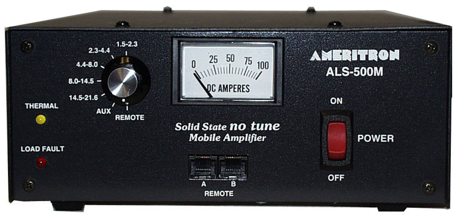
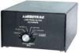
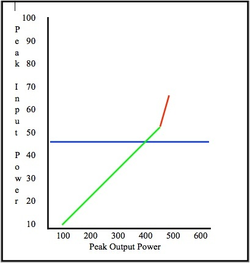
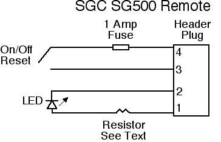
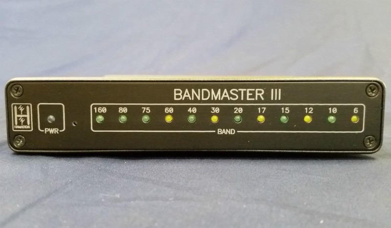
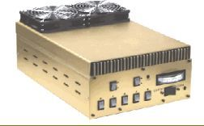
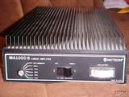
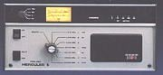

<img> as data-original-src.
Contents: Basics; Antenna Consideration; Power consideration; Speech Compression Use; Drive Level; Remote Controlling; Mounting; Ameritron; Henry Radio; Metron 1000B; SGC; TenTec Hercules;
The decision to buy an HF amplifier has ramifications beyond the obvious ones, not the least of which are the capabilities of the antenna system the extra dose of power is fed to. The truth is, most operators would be better off ERP (Effective Radiated Power) wise, by upgrading their antenna and/or mounting style! So we're assuming here, that you've wrung out every last drop of efficiency from your antenna? If you haven't, do that first, as it improves both your transmitted and receive signal strength. And don't forget adequate bonding!

Part of the equation as mentioned above, is remote control. Most manufacturers make remote control easy for you, but you don't always need what they say you need. They also need to be mounted securely, and in an area with adequate ventilation. Emphasis needs to be put on adequate ventilation! Far too many try to hide their amps under seats, and in cubby holes. It's important to remember, during SSB transmission, a 500 watt PEP (output) amplifier will dissipate approximately 250 watts of heat!
No discussion about amateur amplifiers would be complete without mentioning non-certified amplifiers. Any amplifier which isn't certified under FCC Part 97 rules and regulations shouldn't be used. This includes so-called kit amplifiers, CB "linears", and others manufactured without proper output filtering. Unfortunately, far too many amateurs justify their use by saying, "...I'm just using it mobile..." While that may be true, the IMD these amplifiers generate pollute the amateur bands we all share. And remember, it is the individual amateur who is responsible for his/her spectral purity, not the manufacturer! While rare, the FCC has levied fines against amateurs for using these unregistered devices.

For those in the I just can't help myself category, Ameritron offers the ARF-1000 RF Harmonic filter for $160. Although rated at 1000 watts PEP (400 watts CW), that rating depends on the amplifier it is used with (harmonic content), and the SWR of the load. As Ameritron states in the manual, power out may drop 40% or more with the filter in place. If this is the case, then the harmonic content would still be higher than Part 97 rules dictate. If you're contemplating buying an ARF-1000, download the manual from their web site, and read the warning therein. Whatever antenna you choose, it must be capable of handling a true 500 watts dead carrier! Because far too many manufacturers stretch the truth, here are the antennas to avoid: Any vinyl covered one especially those with large metal end caps; any screwdriver antenna with more than 10 turns per inch; any antenna with a loading coil smaller than 2 inches in diameter; any antenna with a loading coil wound with less than size 12 awg wire;
any antenna with a loading coil larger than 3.5 inches, any antenna with an aluminum shorting plunger; and any antenna which exhibits an unmatched SWR of under 1.6:1.
Whatever antenna you choose, it must be capable of handling a true 500 watts dead carrier! Because far too many manufacturers stretch the truth, here are the antennas to avoid: Any vinyl covered one especially those with large metal end caps; any screwdriver antenna with more than 10 turns per inch; any antenna with a loading coil smaller than 2 inches in diameter; any antenna with a loading coil wound with less than size 12 awg wire;
any antenna with a loading coil larger than 3.5 inches, any antenna with an aluminum shorting plunger; and any antenna which exhibits an unmatched SWR of under 1.6:1.
Mounting is also important, if one wishes to garner the highest ERP from their installation. So if your antenna is mounted via a trunk lip mount; license plate mount; cheap ballmount; mag mounts (no matter how many magnets they have); on a trail hitch mount; or anything less than than a large metal mass directly under the antenna, fix these issues first! Want to know why? Common mode current!
Common mode current can be a really big problem after installing an amplifier. Proper choking of common mode is an absolute must, even if no signs of it are readily apparent! The same goes for motor lead chokes. When in doubt, read the highlighted articles! By the way, common mode ingress can severely affect the received signal+noise/noise ratio (SNR)!
Remotely tuned antennas, like the Scorpion 680 series (shown right), are very popular. A large portion of the users of these antennas, purchase devices to automatically change bands, either by pushing a button or by using the radio's built in controls. Some count the turns the adjustment screw makes, and some rely on the SWR in one form or another. Both controller types suffer from RFI ingress which is exacerbated by high output power levels (I don't care what their brochures say). If you don't understand why, read the Antenna Controllers article!
Readers should peruse the Wiring, and Alternator articles, and this section explains why you should.
The input power of a typical solid state, 500 watt PEP rated amplifier, is approximately 1,000 watts. At 13.8 volts (assuming no voltage drop), the peak current is ≈75 amps. Add in the nominal current draw of the driving transceiver, and the peak current draw is ≈90 amps. The rule of thumb is to limit voltage drop to less than .5 volts. Depending on whether a second battery is used, the amperage rating of the alternator, the wire feeding the amplifier may have to be as large as 1/0! When the voltage does sag (a frequent problem with single-battery installations), it can cause another problem.
Most miniaturized radios are designed to operate on 13.8 VDC. When the voltage drops below a certain operational level, nominally 11.6 VDC, they just shut off! One way around this is to use a battery booster on the radio. There are several designs for them on the net, and at least three commercial units aimed at amateurs. There is a review of three brands in the November 2008 issue of QST. However, let's don't get into a big hurry!
Battery boosters have their place, especially in portable and field-day operation, as long as we watch just how far we discharge the battery. When used mobile, they are just one more device to fail. A much better solution is to adequately wire high-power installations, even if that requires a second battery.
Most late-model vehicles come factory equipped with an alternator of at least 100 amps peak, and a few are as large as 250 amps. Determining if you have enough capacity isn't all that difficult if you use some basic logic. If your car has a rear window defroster, you have about a 30 amp reserve when it is not in use. This is enough for any of the late model 100 watt transceivers like the FT100, FT857, IC706, and even the 200 watt TS480.
Add an amplifier, and the peak amperage is about 90 amps as noted above. Average draw will hover around 40 to 60 amps depending on one's speech pattern. This requires a reserve of at least 70 amps to error on the safe side. If your car has heated seats and mirrors in addition to the rear window defroster, you might have enough. If there is a rule of thumb, it is this: Don't attempt to add an amplifier if the vehicle in question, has an alternator with a rating of less than 90 amps, especially if you live in the snow belt.
In the Audio Transmit article, there is a caution against using any form of speech compression while operating mobile. As noted in the article, speech processing, however it is done, not only increases the average output power, is also increases the average current draw! Depending on the configuration, it could in fact double! This can easily tax the heartiest of electrical systems when amplifiers are being used.
As noted below, most made-for-mobile amplifiers use metal-film resistors in the input circuitry. These attenuators act as both a matching device, and to dissipate excess drive power. Speech compression use can easily overtax these resistors. If one or more fail, excess drive can be applied to the finals, with predictable results—blow finals! But there is another reason.
Most mobile amplifiers are hard pressed to deliver their advertised power ratings (nominally 400 to 500 watts PEP) at a nominal 13.8 volts DC, yet maintain a reasonable level of FCC mandated IMD levels (spectral purity). The level of IMD is related not only to drive power (typically 50 to 65 watts PEP), but voltage stability as well. Even using a second battery and large wiring to increase voltage stability, higher current draw equates to more voltage sag, resulting in increased IMD!
As mentioned above, drive level is an important consideration, as most amplifiers only require 50 to 65 watts PEP for full output (ALS-500), and some as low as 25 watts PEP. Overdriving them is a sure fire way to create excessive levels of IMD, and shortened final life. Read that as expensive!
Thankfully there is a way to know how much drive power is required by using a peak-reading wattmeter. It is also necessary to use a dummy load, not the antenna as an impedance mismatch can cause incorrect readings. The engine should also be running, and at this point the battery voltage measured at the back of the amplifier should be 13.8 to 14 volts. If it isn't, you've got a problem which need to be rectified before proceeding.
Peak (SSB) power output of a solid state transceiver will be approximately the same as it is in CW mode, but there may be a small difference due primarily to power supply dynamics (voltage stability under peak load). However, average power out is a whole new ball game as variations in voices patterns, meter damping, microphone settings, and other factors affect the readout. Don't be surprised if your barefoot transceiver reads just 25 watts on a non peak-reading wattmeter, as the peak will still be ≈100 watts. If it reads more than say 40 or 50 watts, either your microphone gain is too high, or you have the speech compressor turned on (if you do, read this article). Incidentally, running compression while in motion will garner you a lot of bad reports about background noise. It also adds greatly to the electrical requirements which are most-likely already stressed.
Before switching on the amplifier, it is important to know just how much drive the amplifier needs to produce its practical SSB output (never its full-factory rating). The best output level is not solely dependent on the brand or power rating of the amplifier. Electrical system dynamics, wiring size, whether or not you use a second battery, your transceiver's power requirements, alternator size, and your voice pattern all affect it.
Using CW to set up the drive level is counterproductive as most electrical systems cannot keep up with 90 amp loads for more than a few seconds. This is why we use SSB peak power, not CW, to adjust the drive level. Obviously, you'll need to turn down the drive power. Icom, for example, makes this easy as there are separate power levels for HF, 6 meters, and for VHF/UHF. However yours is set up, you should start with 20 watts or so, and work up.

Your speech patterns are important here, and rather than say "test, test", use your call. "This is XYZ testing" is a good start. Whatever you do, don't whistle! Key up and slowly start increasing the input power until the output power no longer increases incrementally. In other words, assuming 30 watts in is 300 watts out or 40 watts in is 400 watts out, then increasing the input to 50 watts only increases the output to 450 watts, means you're into the non-linear portion of the amplifier's power curve (represented by the red line in the chart). This is what we're trying to avoid as non-linearity equals excessive IMD!
Depending on the amplifier, your electrical system, and the transceiver you use, actual PEP output from the transceiver (represented by the blue line in the chart) may be as low as 40 watts, or perhaps as much as 70 watts, but will never be full power! Once this point is found, reduce the power to the next lower setting, or by at least 10%. The peak power out will be from 350 to 450 watts, perhaps a little higher if you electrical system is stiff. And please, don't drive your amplifier harder just because it is rated higher. Watch your microphone gain too. We're all guilty of getting excited about that rare DX station and yelling into the microphone.
Once you've finished setting the drive level, switch from the dummy load to your antenna. Don't be surprised if the peak reading is lower or higher, as any HF mobile antenna will always have some reactance, even at resonance, which will effect the reading (you did match the antenna didn't you?). Therefore, increasing the drive from where it was set previously, is a prescription for splatter.
 amplifiers, like the now-defunct SGC, make this somewhat easier, as all you really need is a way to turn it on and off, as shown at right (band selection can be done automatically).
amplifiers, like the now-defunct SGC, make this somewhat easier, as all you really need is a way to turn it on and off, as shown at right (band selection can be done automatically).
Keying is typically straight forward, and most late-model transceivers will key a remote amplifier without any interface between them. If one is needed, the circuit at upper left is easily built.

 Automatic band selection (if not built in like the SG500), is a bit more complex, and in the case of the Ameritron ALS-500, down right complicated and space consuming. In this case, you need the ARI-500M interface shown at right, and the ALS-500M remote control, and a bunch of cabling between all of the parts (amplifier, remote, and remote interface). Besides finding room for these devices, there is a drawback if you use an Icom transceiver; the ARI-500 Radio Interface uses the band voltage output to select the correct band. Since the band voltage is dependent on supply voltage, its use in a mobile scenario is questionable.
Automatic band selection (if not built in like the SG500), is a bit more complex, and in the case of the Ameritron ALS-500, down right complicated and space consuming. In this case, you need the ARI-500M interface shown at right, and the ALS-500M remote control, and a bunch of cabling between all of the parts (amplifier, remote, and remote interface). Besides finding room for these devices, there is a drawback if you use an Icom transceiver; the ARI-500 Radio Interface uses the band voltage output to select the correct band. Since the band voltage is dependent on supply voltage, its use in a mobile scenario is questionable.
Fortunately, there is a better way to do remote band selection, albeit a bit more expensive. It requires a bit of home brewing as no direct wiring kit is available. Array Solutions makes the Bandmaster III (shown lower left), which sells for $329. It uses information sent out by the transceiver's data output port (all brands). Its output relays can source or sink any reasonable voltage and/or current. It is programmable, which means each of its outputs can be set for a specific set of frequencies, which makes it universally-adaptable for any currently available mobile amplifier.

 The on/off function may be an adaption of the one shown above right. An example is shown directly at right. With appropriate plugs and cabling, it is easy to adapt to either the SG500 or the ALS-500. Also note the inclusion of a voltmeter, which is more telltale than an ammeter in a mobile scenario. The LED (violet in this case) indicates the amplifier is on, and not overload tripped.
The on/off function may be an adaption of the one shown above right. An example is shown directly at right. With appropriate plugs and cabling, it is easy to adapt to either the SG500 or the ALS-500. Also note the inclusion of a voltmeter, which is more telltale than an ammeter in a mobile scenario. The LED (violet in this case) indicates the amplifier is on, and not overload tripped.
Some might argue that you need all the other indicators are needed, such as an SWR meter. While you might need one to set things up the first time, it sure doesn't need to be installed 24/7/365! It is just another distraction device to find space for, and one that won't tell you much until it's too late. However, if you manually control your screwdriver antenna, then use the SWR readout built into your transceiver.
 Mounting a mobile amplifier inside a passenger compartment isn't easy, and for no other reason but safety, it should be discouraged. If you have to mount it inside (i.e.: early model Ameritron ALS-500s without remote mod), it should be in an out of the way place, but where the band switch can be reached. This is a moot point if you run a mono band antenna. You have to stop to change the antenna, so band switching the amplifier is a minor hassle.
Mounting a mobile amplifier inside a passenger compartment isn't easy, and for no other reason but safety, it should be discouraged. If you have to mount it inside (i.e.: early model Ameritron ALS-500s without remote mod), it should be in an out of the way place, but where the band switch can be reached. This is a moot point if you run a mono band antenna. You have to stop to change the antenna, so band switching the amplifier is a minor hassle.
Obviously, remote controlled amplifiers can be mounted in the trunk or other out of the way location. This complicates wiring, but if a second battery is used, the I2R losses will be reduced. Wherever you mount your amplifier, mount is solidly! It pays to remember that some amplifiers weigh as much as 25 pounds, so simple straps and bungie cords won't do the trick.
Wherever you mount your amplifier, it should be in an area with good ventilation, and out of the direct sun light. If you use the trunk, remember it is enclosed, and additional ventilation may be needed, especially in the desert southwest.
Older model solid state amplifiers often use power transistors that are no longer in production. For example, honest-to-john, Motorola® manufactured, MRF454 transistors are nonobtainium at any price. However, it is not uncommon for replacements from other manufacturers to be dual labeled. For example, the 2sc2290 (which has also been discontinued) is a very close replacement part for the MRF454, and they're often labeled with both part numbers. However, the input, and output impedances are different. As a result, they are not plug and play, and some circuit modification is universally required. Sometimes this is easy, sometimes not. The bottom line is, before you buy a used amplifier which uses Motorola® MRF454s or 2sc2290s, make sure it works properly (this eliminates ebay® as a source). You should also note which finals any particular amplifier uses, as some, like the SG500, have used more than one type during their production cycle.
The question remains, should you purchase an older model solid state amplifier knowing that final transistors are no longer available? Unfortunately, it is a question with a questionable answer! If the amplifier works perfectly on all bands it was designed for, if the price isn't too steep for your budget, and you're not into overdriving and/or speech processing, you're probably okay buying one.
 Circa 1990 Ameritron brought out their ALS-500 mobile amplifier. It uses four 2sc2879's and has a built in fan, high SWR and thermal protection. Maximum power output is ≈400 watts PEP, not 500 as the model number would suggest. On early models, only the on/off operation was remotable with band-switching done at the amplifier itself. Later models can be fully remote controlled with the addition of the remote head. Retrofit kits are available for some early models.
Circa 1990 Ameritron brought out their ALS-500 mobile amplifier. It uses four 2sc2879's and has a built in fan, high SWR and thermal protection. Maximum power output is ≈400 watts PEP, not 500 as the model number would suggest. On early models, only the on/off operation was remotable with band-switching done at the amplifier itself. Later models can be fully remote controlled with the addition of the remote head. Retrofit kits are available for some early models.
One drawback to the ALS-500 is the power connections. Early models used pigtails (2 for B+, 2 for ground) which is not an ideal scenario. Later models utilize a Cinch-Jones type connector, but only two pins for each connection is used. This isn't ideal either. If you own one of these, you might want to connect up the four unused pins thus making the power connection more robust.
The input circuitry uses 12 metal oxide swamping resistors, in series with the 2 input transformers; a common practice. If you overdrive the amplifier (>60 watts), in time, these resistors increase in value, resulting in blown finals.
Weight is 7 pounds; the lightest of the lot. The MSRP is $899 with a street price of about $790. The remote head is $50, and the owner-installed 10/12 meter mod is $30. The finals sell for $48 in matched pairs. Ameritron, 116 Willow Rd., Starkville, MS 39759. Their number is 800-713-3550 for sales, 662-323-8211 for service.

The SS1200 runs on 28 VDC ,and used eight MRF422's. Retail price $2,400. This price did not include the remote manual or automatic band change mods. While Henry's base amplifiers used to set the standard, the reader can set his/her own opinion whether this is the case with their mobile amplifiers. I've never seen or heard an SS1200 on the air, and considering the cost of a 12 to 24 volt inverter, I might not ever!
As of February 2005, Henry has quit making amplifiers of any kind. They still imported some VHF ones, but that ceased in 2009. Their repair facility is reportedly still in operation, but only on select models. Henry Radio is located at, 2050 S. Bundy Drive, Los Angeles, CA, 90025-6123. Their number is 310-820-1234.

Depending on the serial number and when it was made, some models of this amplifier may be refit with current production finals (2sd2290s if you can find them). Unfortunately, Datron World Communications, no longer services these amplifiers, including manuals, parts, etc., so save your e-mails and phone calls.
The optional factory remote control is all but impossible to find. Duplicating it isn't difficult, but some provision for keying with modern made-for-mobile transceivers is a requirement. The switching voltage is a nominal 13.8 VDC, at about 600 mils. An Icom IC-706, IC-7000, or IC-7100 will thus require a keying interface.
 The SG500 has been out of production for 5 years. It was one of the finest-designed mobile amplifiers ever made. Unfortunately, both the original Motorola MRF454s, and the later supplied Toshiba 2SC2290 finals, have become nonobtainium. For these reasons, caution should be exercised when buying a used SG500.
The SG500 has been out of production for 5 years. It was one of the finest-designed mobile amplifiers ever made. Unfortunately, both the original Motorola MRF454s, and the later supplied Toshiba 2SC2290 finals, have become nonobtainium. For these reasons, caution should be exercised when buying a used SG500.
Its last MSRP price was $1,425. The high price is partly because it is thermally, over current, under voltage, high SWR, overdrive, and module imbalance protected. A fan kit was available (MSRP $220), and is recommend especially for trunk mounting. A remote control head is also available (MSRP $65), but really not needed as you can build your own remote control.
With its optional fan kit its about a foot square and weighs 25 pounds. It offers seamless integration with the SG235 auto-coupler which is a plus for those who like to QSY a lot. Typical output is 500 watts PEP with about 30 to 50 watts of drive depending on the band. Much more than this and the automatic input attenuator kicks in. Although it has an ALC output, it is positive going which means it is incompatible with any transceiver including SGC's.
The SG500 has two very unique, selectable features for an amateur power amplifier. One of those is automatic band selection, which is the preferred method, even when using the factory remote control option. Here is how it works. The CPU controlled circuitry detects the presence of RF, measures the operating frequency, selects the proper bandpass filter, and keys the transfer relays. Having automatic band selection is very handy if you QSY a lot, and there is never a chance of using the wrong bandpass filter which could potentially damage the bandpass circuitry. The only drawback is a slight delay when first transmitting (250 ms), although re-keys take about 100 ms
The other unique feature RF keying (factory disabled, but easily re-enabled). It is the only amateur amplifier with this feature. While convenient, it is not the stuff of champions. Besides the filter select delay, RF keying adds another 100 ms to the key down time. Just as important is the 500 ms receive delay after key up (a VOX nightmare!). It should be obvious that PTT keying is the preferred way.
The best part is, the two features are independently selectable. Thus PTT keying may be used along with automatic band selection. The keying voltage is 4.3 volts at 2 mils which means it can be switched directly by an Icom IC-706, or IC-7000 (and select Yaesu models like the FT857) via the HSEND line. SGC, 13737 SE 26th St., Bellevue, WA 98005. Their number is 800-259-7331.
As noted above, the SG500 can be remotely controlled. Whether you opt for the factory remote control, or you build one, there is one important caveat. Power for the remote control is taken from a four pin header plug. Pin four of that header plug is supply voltage. Although that pin is protected by an internal 5 amp fuse, if you short the pin to ground, a circuit trace will fail before the fuse opens. Thus, extra care needs to be taken to make sure this pin is not shorted to ground as the repair is both tedious, and time consuming. It's expensive too if the factory does the work!

Whether the Hercules II can be modified to use the Toshiba 2sc2879's (MRF458's closest replacement) depends on the color code of the original transistors. It is a moot point, however, as the upgrade cost is prohibitive.
Used prices vary widely with $400 being the low for fully functioning Hercules Is, to upwards of $850 for Hercules IIs. Lastly, TenTec is no longer providing factory service on the Hercules models because some important parts are no longer available. For more information, contact them directly. TenTec, 1185 Dolly Parton Pkwy, Severville, TN, 37862-3727. Their number is 865-453-7172.
{kind=link}
{kind=link}
{kind=link}
{kind=link}
{kind=link}
{kind=link}